The projects, the research and events we are involved in at Square Peg attract significant media interest. Our latest news appears below.
LATEST NEWS
 FD Surgery Conference FD Surgery Conference
Doug Ross (Square Peg) and Sarah Hutton (The Coca-Cola Company) identified the top 4 disruptions keeping the HR/Finance partnership in organisations awake at night at the FD Surgery Conference in London.
Events that continually disrupt are both the biggest single challenge and single biggest opportunity to driving growth. Doug and Sarah discussed implications on organisations of the gig economy, machine economy, disrupted markets, and non-balance sheet risks including the protection of corporate reputation. They identified lessons learned and emerging best practices which were of significant interest to the participants at this packed event.
Furthermore they outlined that events, processes, and the mechanics & dynamics of change are the fundamental building blocks of transformation in the new economy. Keep an eye out in the future for their new insights on unicorns, zebras, and giraffes as they continue to learn from the high velocity tech world.
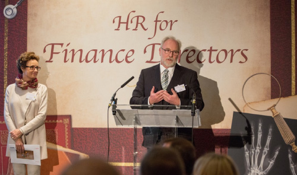
CEO Sleepout
After a night of sleeping rough in London to raise awareness for the homeless, Doug finds himself walking miles with his cardboard and sleeping bag to Oxford Circus and the relative opulence of the Coca-Cola office to work for the day.
Another Square Peg win!
Square Peg were delighted to have recently been announced 'Most Innovative Change Management Consultants – UK' in the Consultancy Awards 2015 organised by Corporate Vision magazine.
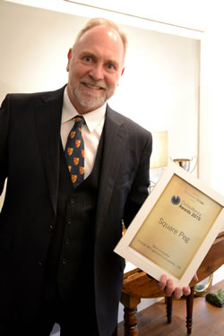Doug Ross, MD, was delighted to receive the trophy on behalf of the Square Peg team stating 'we're thrilled to accept this award recognising Square Peg International as the most innovative change management consultancy in the UK. It reinforces our pedigree as a global, boutique consulting firm focused on supporting organisations and their leaders through significant enterprise-wide changes – events that typically shock organisation such as M&As, restructuring, establishing new mandates and meeting new expectations.'
Doug explained that Square Peg have 'truly tapped into the potential of leveraging the best of both large and small consulting firm worlds allowing us to keep one step ahead of the constantly-changing innovative market place. Remaining open to change and excited by what the changing market brings will allow us to adjust our success formula in an agile fashion to provide future value to our clients when and where they need it – bring on the change!'
This award comes on the heels of other prestigious industry awards including the Institute of Business Consulting’s recognition of Square Peg as the best practice of the year (under 30 employees), best international change project, and a Global Management Consulting award from the Institute of Certified Management Consultants.
A taste of our own medicine!
Square Peg leaders recently experienced a new and very different type of experiential team-building and learning exercise using horses entitled 'Lead, don't follow'. This provided a fascinating insight into horse mentality and how our ability to interact with them can be applied to many business skills – horses are innately tuned into emotions, intentions and focus and this was certainly borne out by the day’s events. Doug's recent article on Experiential Learning provides an interesting insight into this subject.
Download Article Here
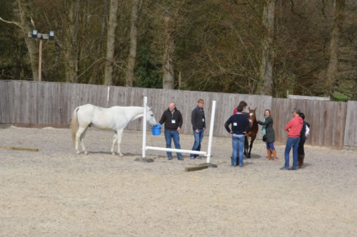
Photo: Doug Ross, Claire Jordan & other delegates formulate their group strategy.
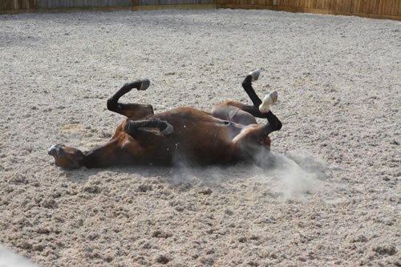
Photo: An interesting timeout for this horse during the day's experience!
Square Peg Associate took a sabbatical to sail the Atlantic
I flew to Tenerife on the 3rd of November to meet the yacht; from there we left to cross the Atlantic by 8th November – the start of 3 weeks' sailing day and night to get to the British Virgin Islands.
Click Here to Read More
So it's official – our consulting expertise is truly world-class – Square Peg take silver at Constantinus International Consulting Awards.
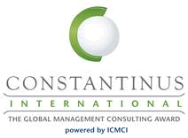The gloabl ICMCI judging panel awarded Square Peg their second highest honour for our work supporting Avios in the transition of Airmiles to Avios. The awards are open to members of ICMCI bodies in over 50 countries and while we were one of only two firms representing the UK Institute of Consulting, our entry was selected from a global shortlist of projects including from Norway, China, Austria, Hungary and Slovenia. The awards ceremony was held in Orlando, Florida and attended by Square Peg Managing Director, Doug Ross. Accepting the award he said:
"Square Peg continues to build its phenomenal reputation for delivering complex, high-stakes, high-speed organisational change on a global scale. We couldn't be more delighted that our team's passion, creativity and pragmatic can-do approach has been recognised with this massive award".
Square Peg is fanatical about building trusted partnerships with our clients, so their endorsements mean a lot. Avois Managing Director, Andrew Swaffield shares our success, saying:
"Huge congratulations are due to the team at Square Peg International. They were with us every step of the way through our hugely challenging transformation and their strategy, change, project and risk management support were absolutely world-class".
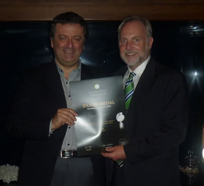
Photo: Square Peg Managing Director, Doug Ross, receives the Silver Constantinus International Award from Francesco D'Aprile, Chair of the ICMCI
Click Here to Read Case Study
Click here to read a blog post from Glenn T. Yonemitsu, MBA, CMC, Chief Executive Officer, Canadian Association of Management Consultants (CMC-Canada).
About the Avios Project:
- Since 1988 Airmiles had existed as a loyalty coalition scheme providing a channel for unsold BA airline seats. Their challenge was to transformation the organisation from a single market, BA owned business to a global loyalty reward currency, available for BA, Iberia and IAG's strategic partners for frequent flyers and frequent buyers.
- Known as 2020 this high impact project involved a complete rethinking of all aspects of the business resulting in the launch of a new brand and the re-platforming of core functions. independent
- Square Peg was change consulting partners throughout all stages of the transformation process.
- For more information, visit http://www.avios.com/
About the Institute of Consulting
- The Institute of Consulting (IC) is the professional body for consultants and advisers in the UK, representing over 5,500 members
- It is the only organisation in the UK who is able to award the Certified Management Consultant and is accredited to do so by the International Council of Management Consultants.
Anything can Fly: Launching Avios – Business Case-study
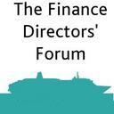Square Peg MD, Doug Ross and Avios MD, Andrew Swaffield will lead a session at the Finance Directors Forum, October 10-13, aboard the Aurora Cruise Ship.
The formation of International Airlines Group (IAG) with Willie Walsh at the helm and a mandate to create a multinational multi-brand airline group focused on high growth provided the old leaders of Airmiles an opportunity to completely transform their business.
Our speakers will review the Avios journey from concept to implementation highlighting lessons learned during the development of their strategy and implementation of their high-risk, high-impact vision to position Avios as the reward platform that powers the world's leading travel based loyalty programmes.
The transition of the entire business in 18 months from a BA subsidiary with a single channel loyalty scheme for unsold BA airline seats to an independent, global, loyalty business with a reward currency available to BA, Iberia and IAG's strategic partners' frequent flyers/buyers is a story of managing risk, overcoming significant barriers, and of momentous organisational change.
The success of this project led to our nomination by The International Council of Management Consulting Institutes (ICMCI)'s for the Constantinus International Award. The awards promote 'excellence in consulting services worldwide' and recognise our work supporting the launch of the Avios. This project was one of only two chosen by the ICMCI to represent the UK in these global awards. Click here to read more about the Constantinus Awards
Managing Effective Consultancy Relationships

On 11th October 2012, Square Peg Director, Phoebe Dunn led a joint session of the UK Institute of Consulting, The Chartered Management Institute and British Computer Society in London. The session was entitled: Managing Effective Consultancy Relationships.
"Consultants! Always borrowing your watch to tell you the time!" "Clients! Always making ridiculous demands and wanting everything yesterday!"
The cliché of the fraught client-consultant relationship is a common-place: characterised by both sides set on exploiting the other amid barely concealed resentments. Whilst the reality is rarely as bad as the cliché, stereotypes can still influence behaviour on both sides. This session explored some of the nuances in client-consultant relationships that make them so much more complex – and potentially valuable - than the cliché. From due diligence and contracting to managing an assignment and establishing long-term partnerships, we looked at all stages of the consulting-relationship life-cycle and some of the assumptions that underpin them. The consultant relationship is a two-way thing: both the client and the consultant have a responsibility to make it as effective as possible.
Phoebe Dunn led an interactive session referring to case studies and participants' own experiences to identify practical ways for both sides to make the most of the relationship.
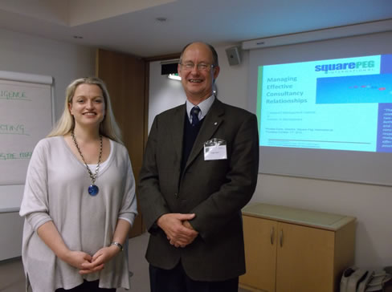
Photo: Phoebe with Hugh Taylor, Chairman of the CMI's Central & Westminster Branch and the UK Institute of Consulting's London Region
Click here to see Phoebe's presentation on Managing Effective Consultancy Relationships
Finance leaders as strategic change partners
European Finance Director's Strategy Forum, Interlaken, Switzerland, September 13th, 2012
Square Peg MD, Doug Ross, addressed the European CFO Conference, Interlaken, Switzerland, September 13th, 2012 on the subject of Finance leaders as strategic change partners. It's a timely topic because, organisations in all sectors are facing the "change or die‟ challenge. Whether it is through necessity to restructure or streamline to survive, or simply to change the culture or processes of the organisation to remain competitive or compliant, success lies in the ability of a business, its leaders, and its workforce to change. So as champions of change, how can financial professionals manage, embed and lead change?
CFOs are regularly leading organisations with burning platforms for change where the need for speed and innovation must be balanced with controls, where gutsy leadership and energy is required to work through adversity and emotional commitment is demanded from everyone concerned. Featuring best practice case studies, insightful research, and practical approaches this seminar will explore the mechanical and dynamic aspects of leading change.
Change is a fundamental element of doing business and risk is a fundamental element of change and at the middle is often the FD who has to understand both the collective and personal implications for those involved.
Square Peg flies the British Flag
As the UK gears up for Olympics Fever this summer we are 'pumped' to be representing our country too. Square Peg International are one of only two consulting firms asked to represent the United Kingdom at this year's Constantinus International Award.
The International Council of Management Consulting Institutes (ICMCI), the global association of national management consulting institutes, has initiated the Constantinus International Award in order to promote excellence in consulting services worldwide.
We are one of only two consulting firms invited to representing Team GB at the ICMCI Constantinus Awards.
Square Peg Managing Director Doug Ross commented: "The invitation to represent the UK on the global stage is a real honour and one that recognises our truly exceptional team. The nomination is for our recent work supporting the launch of Avios globally. It's a project we're particularly proud of as it was true high-stakes, high-speed, complex organisational change".
Throughout the project the Square Peg team worked in true partnership with our clients prompting Avios Managing Director, Andrew Swaffield to comment:
"Square Peg's support was fundamental to our success. The team's brilliant grasp of the huge complexity, their strategic insight, flexible, can-do attitude and practical hands-on support were absolutely world-class."
The dynamic branch of management consulting is an important sparring partner for businesses and entrepreneurs - especially, when precise expertise and efficient implementation of measures are in demand. "Naturally, the quality of the consulting sector relies heavily on the innovative strengths of the consultants themselves. This is why ICMCIhas initiated the Constantinus International Award in order to give a prominent stage to all the excellent accomplishments of the branch", states Aneeta Madhok, past-chairperson of ICMCI.
To learn more, please don't hesitate to give us a call +44 870 2424206 or +44 7717 665007 or email info@squarepeg.com
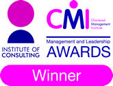Square Peg Double Award Winners
Double win for Square Peg International at Institute of Consulting awards 2011
We were double winners at the 2011 Institute of Consulting Awards on 20th October in London. Proving that bigger isn't necessarily better, our global boutique consultancy was named Practice of the Year and its director, Phoebe Dunn won the coveted title of Consultant of the Year.
The Institute of Consulting awards recognise outstanding examples of consulting in action and entrants are judged based on their strategies, projects and performance, backed up by evidence of success and benefits delivered to clients. To win 'Practice of the Year' Square Peg International received glowing testimonials from clients including Coca-Cola, who praised the firm for its 'top-quality work delivered with creativity and integrity' and Birds Eye Iglo Group, who said the company has: "First class consultants and advisors working to improve business performance and productivity".
Phoebe Dunn, Director of Square Peg International commented: "We're delighted to win not one but two Institute of Consulting awards! The consulting marketplace is increasingly cluttered, so it's great that our innovative and collaborative approach to working in partnership with clients has been recognised – our focus has always been on developing long term client relationships based on trust and sustainable and mutual success. Our clients are in high stake businesses with a lot at risk, likewise we know that our reputation is on the line in everything we do. So we are thrilled that our track-record has led to this honour."
Huw Hilditch-Roberts, director in charge of the Institute of Consulting said: "Square Peg is a shining example of how a small consultancy can produce truly outstanding work. Interestingly, the company recognised for its achievements working with clients on major transitions and in difficult times – which is what quality consultancy should be about particularly in the current business climate. Square Peg has set incredibly high standards and raised the bar in terms of a benchmark for others to follow."
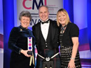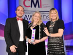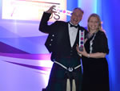
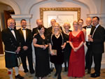
Photos (l to r) - Click on each image for a larger version in pop-up window
- Doug receives the Consultancy of the Year Award
- Phoebe receives the Consultant of the Year Award
- Doug & Phoebe celebrate!
- The Square Peg Team and our guests – (back row: l to r) Doug Ross (Managing Director), Lindsay Parkin (Square Peg Associate), Chris White (Square Peg Associate), Iain Pringle (The Mileage Company), Elizabeth Sideris (Cancer Research UK), Charlotte Barret-McGowan (Square Peg Consultant), Andrew Swaffield (The Mileage Company), Will Long. (front row: l to r) Louise Kelly (Coca-Cola Europe), Phoebe Dunn (Director), Di Ross (Creative Director).
Click Here to Read Press Release
Academic Appointment
Square Peg Managing Director, Doug Ross has recently been appointed as Chairman of the Faculty of Business and Law Advisory Board at Kingston University where he will take over from Sir Roderic Lyne. Amongst other duties as Chairman, and in response to recent developments in higher education, Doug is currently leading work focused on graduate employability.
AWARDS...
SPS Sponsorship - SPS Strategic Value in Corporate Reporting Awards 2010
As long-standing members of the UK’s Strategic Planning Society (SPS) we sponsored the Best Overall Strategic Value Added by a FTSE250 Company award at the SPS Strategic Value in Corporate Reporting Awards 2010. The awards recognise best practice in strategy presentation through annual reports and were made at an event in central London on 28th April.
Read More about the SPS Awards
 Square Peg swept the board at the UK IBC Awards!! Square Peg swept the board at the UK IBC Awards!!
We took home both the awards for which we’d been shortlisted. So we are now proud winners of:
1. Practice of the Year 2009 (under 30 employees) – the IBC’s best boutique consulting firm in the UK!
2. Best International Project – for our work managing change in Birds Eye Iglo Group (BEIG)’s separation from Unilever
The UK Institute of Business Consulting Awards were established to recognise exceptional service, value and quality in the field of business consulting. These watchwords have always been fundamental to what we do, so it’s great to be recognised for the integrity of the Square Peg approach.
Commenting on our double win, Director of the IBC Lynda Purser, said: “IBC is proud to promote case studies of good practice, especially when it demonstrates the great value that consultancy can bring to organisations, which is imperative to our economy at a time of uncertainty. Square Peg International’s achievement of two IB Consulting Awards is truly outstanding considering the stiff competition faced in both of these award categories.”
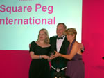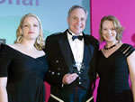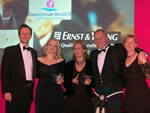
Photos (l to r) - Click on each image for a larger version in pop-up window
- Doug & Phoebe receive the Practice of the Year award from IBC Director Lynda Purser
- Doug & Phoebe receive the Best International Project Award from Ernst & Young
- Team – (l to r) Jason Bates, Phoebe Dunn, Tania Howarth (Birds Eye Iglo), Doug Ross, Diana Ferguson
Download Press Release Here and See the Case Studies
Birds Eye Independence – 'Exceptional Change Management' Recognised In IBC Award Shortlist
The announcement last week of the UK Institute of Business Consulting Awards 2009 has seen global boutique consulting firm Square Peg International recognised for its work in keeping Birds Eye Iglo Group (BEIG) in business as it separated from Unilever last year. Square Peg, which took the lead-change consultant role in BEIG’s separation from erstwhile parent Unilever, is an IBC Awards 2009 finalist for both Practice of the Year (under 30 employees) and Best International Project - for its work with the European frozen food giant.
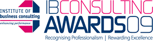
Download Press Release Here
PUBLISHED ARTICLES AND REGULAR COLUMNS...
Interview with Doug Ross
Strategy magazine
Doug Ross, managing director of consultancy, Square Peg, underlines the importance of high-quality leadership and explains how a commitment to strategic thinking and planning for worst-case scenarios can bring rewards.
Download this article
Scenario Planning
Growing Business magazine
Think of Alexander the Great, Napoleon, Montgomery – all are real world strategists who have used anticipatory planning techniques – battle scenarios – to arm themselves for victory. Using the same principles as Alexander the Great, organisations can use scenario planning as a strategic management tool to make flexible long-term plans for the future. Square Peg examines the techniques of scenario planning and how businesses can use these to anticipate and evolve in a rapidly changing world in order to keep ahead of the competition.
Download this article
Growth Strategies Conference
On 25th April, Square Peg’s Doug Ross shared a platform with Declan Curry, the BBC’s Business Presenter, Adrian Fawcett, newly-appointed Chief Executive of the General Healthcare Group, and Frank Carter of KPMG at the Growth Strategies Conference. In their session, 250 CEOs and senior directors of fast-growing businesses were addressed on the topic of Successful Growth by Acquisition. In particular, Doug’s session dealt with maximising deal value through proper integration of both the physical and intellectual resources of organisations.
Download this article
A New View of Strategic Leadership
Strategy magazine
Strategy Magazine is the regular publication of the Strategic Planning Society, an organization which fosters research and best practice in strategic thought and action, aiming to provide a link between academic research and practical implementation of strategy. In a recent article for this publication, Doug Ross discusses how strategic leadership needs to adapt to a world of continuous and rapid change.
Download this article
Diversified Growth Strategies for Entrepreneurs
Growing Business magazine
The business environment is never static: the most consistent demand on management is the ability to read change trends and adapt the organisation to survive them. A really good management team will not only survive change, but use it to the organisation's benefit. Diversification is one way to take advantage of change to grow the business, taking on new products, markets, skills, techniques or facilities. While this strategy can be risky it has the potential to reward the brave with rapid and expansive business growth. In this article Doug Ross looks at various diversification strategies, their risks and potential rewards using an amusing parallel with poultry farming and in particular looking at the successes and failures of the diversification strategy of Mrs Tweedy, the famously evil chicken farmer in Aardman Production's hilarious 'Chicken Run' animation film.
Download this article
Intrapreneurialism: What it can do for your business
Growing Business magazine
Imagine having the entrepreneurial drive, enthusiasm and brilliance of someone like Henry Ford, Estée Lauder, or Richard Branson at your disposal. Enter intrapreneurialism, the development of entrepreneurs within a business. A company that needs to take advantage of synergies, economies of scale and shared risk-taking for its success can benefit immeasurably from encouraging this discipline. Doug Ross explains how you can go about harnessing your employees' entrepreneurialism for the benefit of your business.
Download this article
The perils of outsourcing ... and how to avoid them
Growing Business magazine
Call centres and IT support leap to mind at the suggestion of outsourcing/offshoring, but in fact almost any business function, product or service can be offshored or outsourced. This brings many advantages to the organisation, not least freeing up resources to focus on the company's core business, but there are also many risks to consider. In this article, Doug Ross looks at how to get the best from outsourcing.
Download this article
Hiring a consultant: do your diligence
Growing Business magazine
Are you infallible? Can you cope with the demands of growth? Square Peg's Doug Ross considers the value of consultants and how to hire a good one.
Download article here
M&A deals: getting the people factor right
Growing Business magazine
In May, our regular column in Growing Business: the UK’s most popular magazine for entrepreneurs was launched with ‘M&A deals: getting the people factor right’. Despite the risks, M&A is increasingly popular. In the first of a series of articles, we reveal how to minimise potential risks and maximise the value of deals through careful management of people and cultural factors.
Download article here
Beyond Lip Service
Benefits & Compensation International
Article by Doug Ross on ‘Beyond Lip-Service’ which takes a look at the way organisations pay lip-service to their people issues without really understanding their real impact. The article was written for a Compensation and Benefits Manager audience.
Download article here
MEDIA COVERAGE...
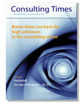Small Consultancies can punch above their weight
Consulting Times' Mick James takes a look at the 'dark matter of the consulting industry' and cites Square Peg as a case in point.
Read the article here or open the pdf and see page 10
Double win for Square Peg International at Institute of Consulting Awards
Read the article on page 5 of the pdf here
... and see some of our Press coverage:
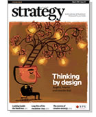Square Peg Managing Director is featured in the March 2010 edition of Strategy Magazine.
In this feature article Doug underlines the importance of high-quality leadership and explains how a commitment to strategic thinking and planning for worst-case scenarios can bring rewards.
Download article here
Kingston Business School celebrates Square Peg awards wins
Square Peg has close ties with the Kingston Business School and was delighted to be joined at the recent Institute of Business Consulting (IBC) awards by Dr Stuart Archbold, Associate Dean and Director of the Kingston Business School. Dr Archbold commented: ‘We are very pleased to be associated with this award-winning team of exceptional consultants and grateful for the generous support that Doug and Square Peg provide to Kingston Business School.’ Read Kingston Business School's report
Institute of Business Consulting (IBC) in the Spotlight – Awards recognise the value of consultancy - Professional Manager Magazine
Following Square Peg’s double win at the UK Institute of Business Consulting Awards, the team featured in this article in Professional Manager, January 2010.
Download article here
Read more about the awards (above)
See the Case Studies
Tunnel Vision – ChinaEconomicReview.com
As the global economic down-turn took its toll in China, Square Peg Managing Director was asked to comment. In this article by ChinaEconomicReview.com, Doug provides his insights on the internal and long-term implications of cost cutting strategies.
Read the ChinaEconomicReview.com Article
Personnel Today
Karen Dempsey, Editor interviewed Doug Ross to reveal exclusive details of our research entitled 'The new world demands a new view of strategic leadership - moving beyond planning'. The three-page article was entitled 'A little less conversation, a little more action please' and gave insights into survey respondents attitudes towards their senior leaders.
Read the Personnel Today article
Presentation of the initial findings of the survey
CFO Europe
Janet Kersnar, Editor-in-Chief interviewed Senior Consultant Phoebe Dunn on the topic of our recent research report Stop Throwing Good Money after Bad; Breaking the Wasteful Leadership Development Spiral. The article was entitled ‘Filling the void – why honing tomorrow’s finance leaders is a lot harder than it looks.’
Download research report here
PRESS RELEASES...
Stop press: 50% of leadership teams can neither plan nor execute
By their own admission, few leadership teams are doing a good job of leading their organisations through times of change. Research conducted with 937 senior leaders by the business consultancy Square Peg reveals that 50% of senior management teams can neither plan nor execute… Just 8% believe their leaders are ‘fantastic and extremely talented’ and a shocking 14% are ‘void of any real leadership talent.’ Fortunately our global survey also delivered a more positive message. 30% of the leadership teams were excellent at both planning a direction/strategy for their organisation and being able to successfully execute it. The challenge is to identify the 30% that can really make a difference. The study also revealed a number of practices that differentiate high performing organisations from low performing ones.
Download press release here
Stop press: 63% of leadership development may be a waste of time and money
63% of leadership development may be a waste of time and money according to our latest leadership development research – ‘Stop throwing good money after bad. Breaking the wasteful leadership development spiral’.
Download press release here
| 
{kind=link}
{kind=link}
{kind=link}
{kind=link}
{kind=link}
{kind=link}
{kind=link}